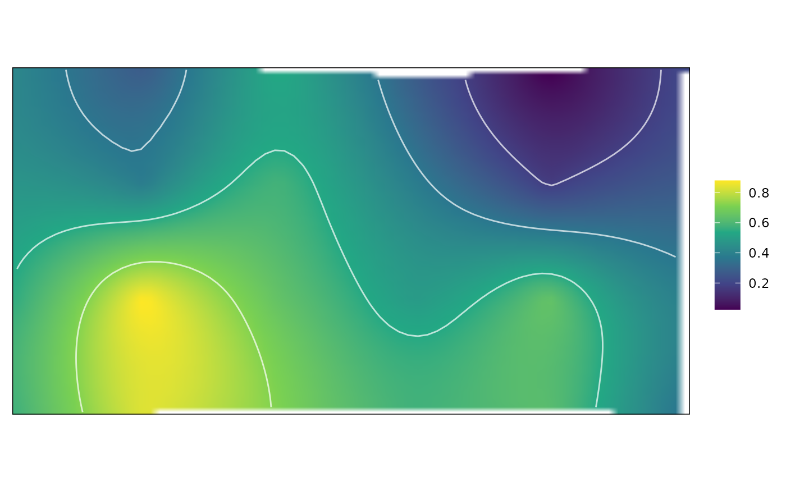
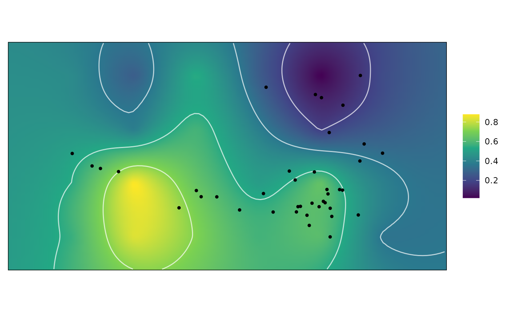

Calculate a single weighted adaptive landscape
calc_lscp.Rdcalc_lscp() calculates a single weighted landscape from a set of kriged surfaces of functional characteristics and a set of weights for those characteristics. This landscape can then be plotted using plot.wtd_lscp. Additionally computes the fitness values for a sample of additional coordinates.
Usage
calc_lscp(data, weights, ...)
# S3 method for class 'kriged_surfaces'
calc_lscp(data, weights, ...)
# S3 method for class 'all_lscps'
calc_lscp(data, weights, i, ...)Arguments
- data
a
kriged_surfacesorall_lscpsobject; the output of a call tokrige_surforcalc_all_lscps, repsectively. If nonew_datacomponent is included indata, only the adaptive landscape will be produced.- weights
a vector of weights, one for each functional characteristic. These weights should be nonnegative and sum to 1.
- i
when
datais anall_lscpsobject, the index of the set of weights in thegrid_weightsobject supplied tocalc_all_lscps()to use to create the weighted landscape.- ...
ignored.
Details
calc_lscp() operates on the kriged surfaces stored in data by multiplying the functional characteristic values of each point on the surface grid by the weights and computing the sum of those values to arrive at a "fitness" value that is represented by the maximum height of the combined adaptive landscape. When a new_data component is present in data (e.g., because a new_data argument was supplied to krige_surf() or data is the output of a call to krige_new_data()), the weighted fitness values will be computed for the coordinates in new_data as well.
Value
A wtd_lscp object, which contains the following components:
- W
a named vector of the supplied weights
- Wprime
a list containing the weighted
gridandnew_datacomponents ofdata, where the values of the functional characteristics for each location on the surface are weighted by the supplied weights and an additiona column,Z, has been added containing the height of the adaptive landscape at that point.
See also
plot.wtd_lscp for plotting the resulting weighted landscape.
generate_weights for generating a matrix of weights.
calc_all_lscps for computing weighted landscapes for a matrix of weights (i.e., rather than the single set of weights that can be used with calc_lscp). For finding an optimal set of weights, calc_all_lscps should be used, though it only produces the weighted fitness values for each set of weightd and not the weighted functional characteristic surfaces.
Examples
data("warps")
warps_fnc <- as_fnc_df(warps, func.names = c("hydro", "fea"))
kr_surf <- krige_surf(warps_fnc)
#> [using ordinary kriging]
#> [using ordinary kriging]
weights <- c(hydro = .5, fea = .5)
w_lscp <- calc_lscp(kr_surf, weights = weights)
plot(w_lscp)

# Adding new_data
data("turtles")
kr_surf <- krige_new_data(kr_surf, new_data = turtles)
#> [using ordinary kriging]
#> [using ordinary kriging]
w_lscp <- calc_lscp(kr_surf, weights = weights)
w_lscp
#> A wtd_lscp object
#> - weights:
#> hydro fea
#> 0.5 0.5
#> - new data:
#> 40 rows
#> average Z = 0.575
plot(w_lscp)

## See further use with calc_all_lscps()
## at help("calc_all_lscps")